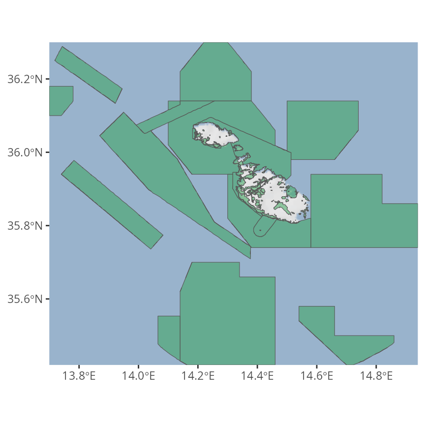

wdpar: Interface to the World Database on Protected Areas
Jeffrey O. Hanson
2018-12-06
Source:vignettes/wdpar.Rmd
wdpar.RmdOverview
The wdpar R package provides an interface to the World Database on Protected Areas (WDPA). It provides functions for downloading and cleaning data following best practices (outlined in Butchart et al. 2015; Runge et al. 2015; and Protected Planet).
Tutorial
Here we will provide a short introduction to the wdpar R package. First, we will load the wdpar R package. We will also load the sf and dplyr R packages to help explore the data. Additionally, we will load the ggmap R package to visualize the data.
Now we will download protected area data for Malta from Protected Planet. We can achieve this by specifying Malta’s country name (i.e. "Malta") or Malta’s ISO3 code (i.e. "MLT").
# download protected area data for Malta
# (excluding areas represented as point localities)
mlt_raw_pa_data <- wdpa_fetch("Malta")Next, we will clean the data set. See the help page for wdpa_clean for a detailed description on the data cleaning process.
# clean Malta data
mlt_pa_data <- wdpa_clean(mlt_raw_pa_data)Now that we have finished cleaning the data, let’s preview the data. For more information on what these columns mean, please refer to the official manual (available in English, Spanish, French, and Russian).
# print first six rows of the data
head(mlt_pa_data)## Simple feature collection with 6 features and 28 fields
## geometry type: MULTIPOLYGON
## dimension: XY
## bbox: xmin: 1382455 ymin: 4280784 xmax: 1399726 ymax: 4299684
## epsg (SRID): NA
## proj4string: +proj=cea +lon_0=0 +lat_ts=30 +x_0=0 +y_0=0 +datum=WGS84 +units=m +no_defs
## precision: 1000
## # A tibble: 6 x 29
## WDPAID WDPA_PID PA_DEF NAME ORIG_NAME DESIG DESIG_ENG DESIG_TYPE
## <dbl> <chr> <chr> <chr> <chr> <chr> <chr> <chr>
## 1 1.94e5 194420 1 Filf… Filfla Rise… Nature R… National
## 2 1.94e5 194425 1 Il-G… Il-Gżejj… Rise… Nature R… National
## 3 5.56e8 5555886… 1 Il-M… Il-Majji… Park… National… National
## 4 1.75e5 174757 1 Il-Ġ… Il-Ġonna… List… List of … National
## 5 1.75e5 174758 1 Bidn… Bidnija,… List… List of … National
## 6 1.94e5 194415 1 Il-Ġ… Il-Ġonna… List… List of … National
## # ... with 21 more variables: IUCN_CAT <chr>, INT_CRIT <chr>,
## # MARINE <chr>, REP_M_AREA <dbl>, REP_AREA <dbl>, NO_TAKE <chr>,
## # NO_TK_AREA <dbl>, STATUS <chr>, STATUS_YR <dbl>, GOV_TYPE <chr>,
## # OWN_TYPE <chr>, MANG_AUTH <chr>, MANG_PLAN <chr>, VERIF <chr>,
## # METADATAID <dbl>, SUB_LOC <chr>, PARENT_ISO <chr>, ISO3 <chr>,
## # GEOMETRY_TYPE <chr>, AREA_KM2 <dbl>, geometry <MULTIPOLYGON [m]>We will now reproject the data to longitude/latitude coordinates (EPSG:4326) for visualization purposes.
# reproject data
mlt_pa_data <- st_transform(mlt_pa_data, 4326)Next, we can plot a map showing the boundaries of Malta’s protected area system.
# download basemap for making the map
bg <- get_stamenmap(unname(st_bbox(mlt_pa_data)), zoom = 8,
maptype = "watercolor", force = TRUE)
# print map
ggmap(bg) +
geom_sf(data = mlt_pa_data, fill = "#31A35480", inherit.aes = FALSE) +
theme(axis.title = element_blank())
We can also create a histogram showing the year when each protected area was established.
hist(mlt_pa_data$STATUS_YR, main = "Malta's protected areas", xlab = "Year established")
Now let’s calculate some statistics. We can calculate the total amount of land and ocean inside Malta’s protected area system (km2).
# calculate total amount of area inside protected areas (km^2)
statistic <- mlt_pa_data %>%
as.data.frame() %>%
select(-geometry) %>%
group_by(MARINE) %>%
summarize(area_km = sum(AREA_KM2)) %>%
ungroup() %>%
arrange(desc(area_km))
# print statistic
print(statistic)## # A tibble: 3 x 2
## MARINE area_km
## <chr> <dbl>
## 1 marine 8655.
## 2 terrestrial 92.0
## 3 partial 0.135We can also calculate the percentage of land inside its protected area system that are managed under different categories (i.e. using the protected area management categories defined by The International Union for Conservation of Nature).
# calculate percentage of land inside protected areas (km^2)
statistic <- mlt_pa_data %>%
as.data.frame() %>%
select(-geometry) %>%
group_by(IUCN_CAT) %>%
summarize(area_km = sum(AREA_KM2)) %>%
ungroup() %>%
mutate(percentage = (area_km / sum(area_km)) * 100) %>%
arrange(desc(area_km))
# print statistic
print(statistic)## # A tibble: 8 x 3
## IUCN_CAT area_km percentage
## <chr> <dbl> <dbl>
## 1 IV 4471. 51.1
## 2 Not Reported 4236. 48.4
## 3 V 29.0 0.331
## 4 Not Assigned 8.69 0.0993
## 5 II 2.47 0.0283
## 6 VI 0.512 0.00586
## 7 III 0.205 0.00235
## 8 Ia 0.0904 0.00103We can also plot a map showing Malta’s protected areas and color each area according to it’s management category.
ggmap(bg) +
geom_sf(aes(fill = IUCN_CAT), data = mlt_pa_data, inherit.aes = FALSE) +
theme(axis.title = element_blank(), legend.position = "bottom")
Citation
Please cite the wdpar R package and the World Database on Protected Areas (WDPA) in publications.
To cite the wdpar package in publications, use:
Hanson JO (2018) wdpar: Interface to the World Database on
Protected Areas. R package version 0.0.0.1. Available at:
https://github.com/jeffreyhanson/wdpar
UNEP-WCMC and IUCN (2018) Protected Planet: The World Database
on Protected Areas (WDPA), [insert month/year of the version
downloaded], Cambridge, UK: UNEP-WCMC and IUCN. Available at:
www.protectedplanet.net.
Please cite both the World Database on Protected Areas data set
and this package.
To see these entries in BibTeX format, use 'print(<citation>,
bibtex=TRUE)', 'toBibtex(.)', or set
'options(citation.bibtex.max=999)'.